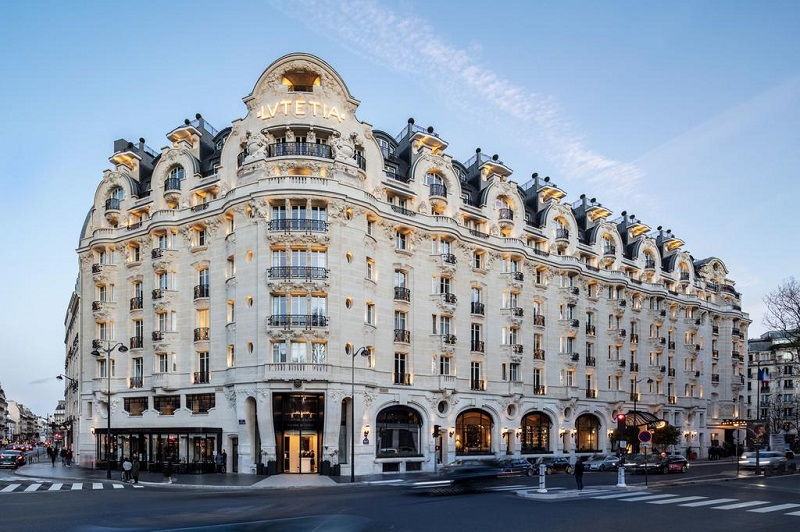
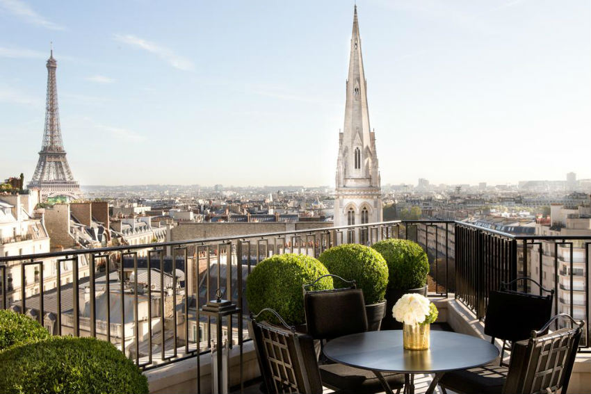

| |
|
|
|
|
París es una de las capitales europeas con mayor número de plazas hoteleras. En un radio de 5 kilómetros se pueden encontrar más de 1.000 hoteles.
París es una ciudad muy extensa y los puntos de interés están bastante alejados unos de otros. Si queréis alojaros en el París más elegante, los Campos Elíseos, la Plaza de la Concordia, el Louvre y la zona de la Ópera Garnier son apuestas seguras. Si por otro lado preferís el ambiente callejero y queréis disfrutar de la vida nocturna, el Barrio Latino es la opción ideal. Los apartamentos turísticos tienen cada vez mayor aceptación y se han convertido en una buena alternativa a los hoteles. Podéis reservar apartamentos con precio mínimo garantizado en la web Apartamentos Baratos. Los amantes de la naturaleza encontrarán dos campings cerca de París que abren durante todo el año: Du Bois de Boulogne y Paris-Est le Tremblay.
De todos modos, podemos resumir diciendo que ambas orillas del Sena, desde la Isla de la Cité hasta la Torre Eiffel son zonas céntricas, seguras e ideales para alojarse.
Si queréis ahorrar y no os importa tener que coger el metro todas las mañanas, encontraréis hoteles más baratos algo más alejados del centro. Pensándolo fríamente, como París es una ciudad tan extensa, estéis donde estéis tendréis que recurrir al transporte público en múltiples ocasiones.


Apartamentos
Campings en París